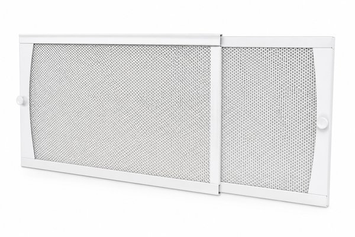
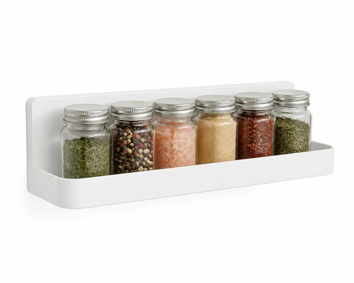
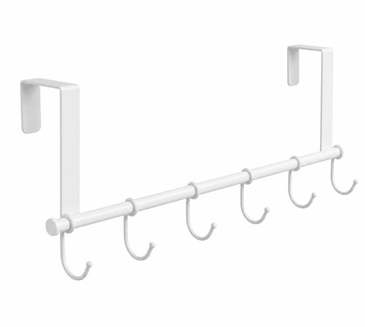
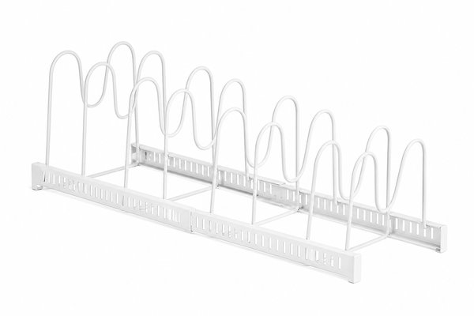
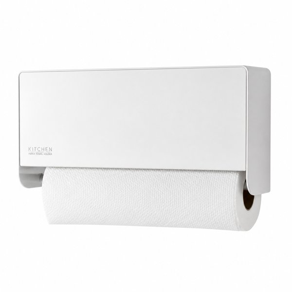
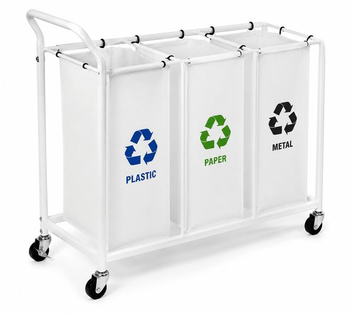
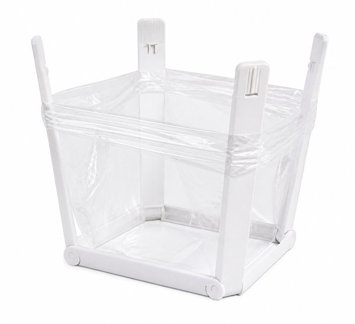
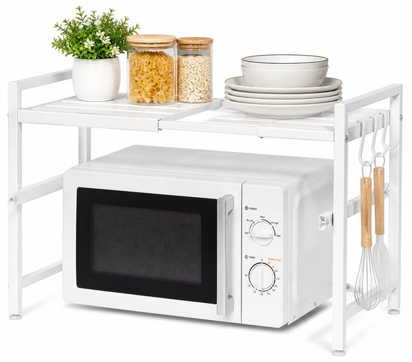

【2026年最新】狭いキッチンが即スッキリ！山崎実業(tower)おすすめ便利収納グッズ10選
「調理スペースがまな板1枚分しかない」「調味料やフライパンがコンロ周りに溢れて料理がしにくい」——キッチンの収納不足は毎日の自炊のやる気を削いでしまいますよね。
そんな悩みをスッキリ解決してくれるのが、ミニマルな白黒スチールデザインと圧倒的な機能美で絶大な支持を集める山崎実業の「tower（タワー）」シリーズです。
本記事では、狭いキッチンの整理に悩み抜いた編集部が実際に導入して「作業スペースが2倍に広がった！」と感動した、山崎実業(tower)おすすめ神収納グッズ10選をご紹介します。
- おすすめ10選 スペック・特徴比較表
- BEST 1｜tower マグネット 冷蔵庫サイドラック ホワイト
- BEST 2｜tower 排気口カバー 伸縮タイプ (45〜82cm対応) コンロ奥ガード
- BEST 3｜tower マグネット スパイスラック 調味料ラック
- BEST 4｜tower 折り畳み水切りラック シリコーントレー付き S/L
- BEST 5｜tower レンジフードフック 7連 吊り下げキッチンツール収納
- BEST 6｜tower シンク下 伸縮鍋蓋＆フライパンスタンド 仕切り調整可能
- BEST 7｜tower マグネット キッチンペーパーホルダー 片手でカット
- BEST 8｜tower 目隠し分別ダストワゴン 3分別 キャスター付き
- BEST 9｜tower ポリ袋エコホルダー L 三角コーナー不要スタンド
- BEST 10｜tower 伸縮レンジラック 電子レンジ上ラック 2段収納
- 🎁【読者限定】完全無料で試せる人気サービス
- まとめ：生活をラクにする最初の一歩
| 順位 | 商品名 | ブランド | 最大の特徴・おすすめ理由 | 総合評価 |
|---|---|---|---|---|
| BEST 1 | tower マグネット 冷蔵庫サイドラック ホワイト | 山崎実業（Yamazaki） | 強力マグネット採用でペーパーを片手で切ってもビクともしない | 4.9 ★ |
| BEST 2 | tower 排気口カバー 伸縮タイプ (45〜82cm対応) コンロ奥ガード | 山崎実業（Yamazaki） | 掃除が極めて困難な排気口内部への油汚れの侵入を完全ブロック | 4.9 ★ |
| BEST 3 | tower マグネット スパイスラック 調味料ラック | 山崎実業（Yamazaki） | 底面に水や油が溜まらないスリット構造で衛生的 | 4.8 ★ |
| BEST 4 | tower 折り畳み水切りラック シリコーントレー付き S/L | 山崎実業（Yamazaki） | 不要な時は丸めて片付けられるためシンクが常に広く使える | 4.8 ★ |
| BEST 5 | tower レンジフードフック 7連 吊り下げキッチンツール収納 | 山崎実業（Yamazaki） | レンジフード下のデッドスペースを最大限に有効活用 | 4.8 ★ |
| BEST 6 | tower シンク下 伸縮鍋蓋＆フライパンスタンド 仕切り調整可能 | 山崎実業（Yamazaki） | フライパンを重ねず立てて収納できるため取り出しやすさ抜群 | 4.8 ★ |
| BEST 7 | tower マグネット キッチンペーパーホルダー 片手でカット | 山崎実業（Yamazaki） | 片手だけでキッチンペーパーをスパッと切れる感動の操作性 | 4.8 ★ |
| BEST 8 | tower 目隠し分別ダストワゴン 3分別 キャスター付き | 山崎実業（Yamazaki） | 正面からゴミ袋が見えずキッチンの生活感を一瞬でホテルライクに | 4.9 ★ |
| BEST 9 | tower ポリ袋エコホルダー L 三角コーナー不要スタンド | 山崎実業（Yamazaki） | ヌメリや悪臭の温床になるシンクの三角コーナーを完全に断捨離 | 4.9 ★ |
| BEST 10 | tower 伸縮レンジラック 電子レンジ上ラック 2段収納 | 山崎実業（Yamazaki） | 電子レンジ上のがらんとした空間を大容量の収納スペースに変換 | 4.8 ★ |
tower マグネット 冷蔵庫サイドラック ホワイト

冷蔵庫の側面に強力マグネットでピタッと貼るだけで、キッチンペーパー・ラップ・アルミホイル・調味料・輪ゴム・ハサミを一箇所に集約できる超ロングセラー。調理中の動線が劇的にスムーズになります。
- 強力マグネット採用でペーパーを片手で切ってもビクともしない
- 上段・中段・フックまで多彩な小物をすっきり立体収納
- シンプルで清潔感あるスチール製でおしゃれなキッチンに調和
- 冷蔵庫の側面にスチール面（マグネットが付く場所）が必要
tower 排気口カバー 伸縮タイプ (45〜82cm対応) コンロ奥ガード

IHやガスコンロ奥の魚焼きグリル排気口に油ハネや野菜くずが入るのを100%防ぐ神ガード。斜めになったフラットなスチール製で汚れをサッと拭き取れ、伸縮式でどんなキッチンの幅にもジャストフィットします。
- 掃除が極めて困難な排気口内部への油汚れの侵入を完全ブロック
- 汚れがついても中性洗剤で丸洗い・ひと拭きでピカピカ
- 伸縮式で一般的な60cm〜75cmのコンロに幅広く対応
- グリル使用時はカバーを少し奥に倒すかスライドさせる必要がある
tower マグネット スパイスラック 調味料ラック

コンロ周りの壁面やレンジフードにマグネットでくっつける調味料ラック。作業台の上に調味料を置かずに済むため、調理スペースが広く使えて油ハネの拭き掃除も一瞬で終わります。
- 底面に水や油が溜まらないスリット構造で衛生的
- 調味料を浮かせることでキッチンのワークトップが広々使える
- 耐荷重約1.5kgの強力磁石で重いオイルボトルを置いても安心
- 奥行きが約11cmのため大きすぎるキャニスターは入らない場合がある
tower 折り畳み水切りラック シリコーントレー付き S/L

シンクの上に渡して使えるロール式の水切りマット。使わないときはクルクル巻いてコンパクトに収納でき、大きな水切りカゴを置くスペースがないキッチンに革命を起こします。シリコントレーにはスプーンやお箸も置けます。
- 不要な時は丸めて片付けられるためシンクが常に広く使える
- 頑固なスチールワイヤー製で重い鍋やまな板を置いてもたわまない
- 耐熱温度220℃で熱い鍋敷きとしてもマルチに活躍
- シンクの奥行きサイズに合わせたS・Lの選択が必要
tower レンジフードフック 7連 吊り下げキッチンツール収納

レンジフードの縁に引っ掛けてネジを締めるだけで、フライ返しやお玉、計量スプーン、鍋つかみなどを吊り下げ収納できる7連フック。コンロの上に道具が整然と並び、料理中の出し入れが片手で完結します。
- レンジフード下のデッドスペースを最大限に有効活用
- 引き出しを開け閉めする手間がなく欲しい道具が一瞬で手に取れる
- 工具不要で賃貸住宅でも傷をつけずに簡単に取り付け可能
- レンジフードの形状（折り返し部分）の厚み制限を確認する必要あり
tower シンク下 伸縮鍋蓋＆フライパンスタンド 仕切り調整可能

シンク下の引き出しを開けた瞬間にフライパンや鍋蓋を立てて一目で取り出せる伸縮スタンド。重ねて収納すると下の鍋を取り出すのが大変なストレスを、立てる収納によって完全にゼロにします。
- フライパンを重ねず立てて収納できるため取り出しやすさ抜群
- 仕切りパーツの位置を調理器具の厚みに合わせてミリ単位で調整可能
- 伸縮式でキッチンの引き出しの横幅に合わせてピッタリ設置
- 組み立て時に仕切りワイヤーを差し込む作業が少しある
tower マグネット キッチンペーパーホルダー 片手でカット

シリコンのストッパー構造により、濡れた手でも片手でペーパーをサッと引っ張って千切れる専用ホルダー。一般的な海外製の大判ロール（コストコサイズ）にも対応し、料理のスピードを落としません。
- 片手だけでキッチンペーパーをスパッと切れる感動の操作性
- 強力マグネットでロールを引っ張っても本体がズレない
- 大判のアメリカンサイズロールも余裕でセット可能
- 壁から少し手前に飛び出す厚みがある
tower 目隠し分別ダストワゴン 3分別 キャスター付き

レジ袋やゴミ袋を掛けるだけで、燃えるゴミ・缶・ビン・ペットボトルをスマートに分別できるワゴン。前面の目隠しパネルがゴミ袋の生活感を完全に隠し、キャスター付きでゴミ出しや床掃除もラクラクです。
- 正面からゴミ袋が見えずキッチンの生活感を一瞬でホテルライクに
- ゴミ袋を直接掛ける構造なのでゴミ箱内部の掃除の手間がゼロ
- キャスター付きで調理中は手元に引き寄せ、普段は隙間にスッキリ収納
- スチール製でしっかりしているぶん組み立てにプラスドライバーが必要
tower ポリ袋エコホルダー L 三角コーナー不要スタンド

スーパーのポリ袋を掛けるだけで即席の生ゴミ入れになる卓上ホルダー。ヌメリやすい三角コーナーを置かずに済み、調理が終わったら袋の口を縛ってポイするだけ。使わないときはパタンとフラットに折りたためます。
- ヌメリや悪臭の温床になるシンクの三角コーナーを完全に断捨離
- グラスや水筒の水切りスタンド、チャック付き保存袋のスタンドにも活用可能
- 滑り止めシリコン付きで濡れた調理台の上でも安定
- 重い水分を含んだ生ゴミを限界まで詰めると袋が外れることがある
tower 伸縮レンジラック 電子レンジ上ラック 2段収納

電子レンジやトースターの上のデッドスペースに、ケトルやコーヒー器具、ラップを置ける頑丈なスチールラック。横幅を約47.5〜75cmまで伸縮できるため、手持ちの家電のサイズにぴったり合わせられます。
- 電子レンジ上のがらんとした空間を大容量の収納スペースに変換
- 耐荷重約12kgのタフなスチール製で重い家電も安心して置ける
- サイドのフックにミトンやキッチン小物を掛けられて便利
- 設置時にレンジ上の放熱スペース（数cm）を確保する必要あり
日々の暮らしや買い物を楽しむなら、人気雑誌1,000誌以上がスマホやタブレットで読み放題の「楽天マガジン」が圧倒的におすすめです！初回31日間は完全無料で、無料期間中に解約すれば料金は1円もかかりません。
＼ 読者負担0円！雑誌1,000誌読み放題 ／楽天マガジン 31日間無料お試しを詳しく見る →
💡 まとめ：生活をラクにする最初の一歩
キッチンのごちゃつきを解消すると、料理のスピードが早くなるだけでなく毎日の掃除や後片付けが劇的にラクになります。排気口を油汚れから守るカバーや、冷蔵庫横の隙間を収納に変えるマグネットラックなど、1つ取り入れるだけで生活感が消え去ります。お気に入りのtowerアイテムで、憧れのすっきりキッチンを作ってみませんか。
楽天市場では「5と0のつく日」や「お買い物マラソン」などのキャンペーンに合わせて購入すると、ポイント還元が最大化してお得に手に入ります。ぜひチェックしてみてくださいね。